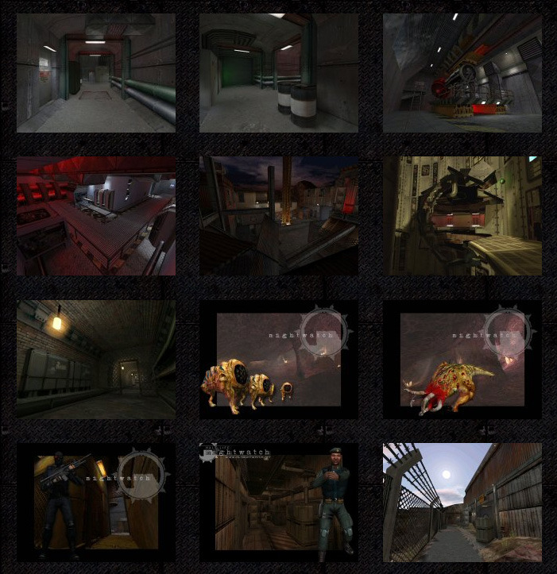

The lost screenshots of Half-Life: Nightwatch.
These are officially released Nightwatch images that I haven’t been able to find full size, either in my image collection or from combing through a ton of sites in archive.org.
So here they are as a bunch, if you happen to have these pictures (or are a better internet detective), please do forward them on so I can add them to Goldsource Gold.